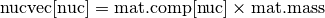

Materials – pyne.material¶
This module contains the Material class, which is used to represent nuclear materials throughout PyNE.
All functionality may be found in the material package:
from pyne import material
Materials are the primary container for radionuclides. They map nuclides to mass weights, though they contain methods for converting to/from atom fractions as well. In many ways they take inspiration from numpy arrays and python dictionaries. Materials have two main attributes which define them.
- comp: a normalized composition mapping from nuclides (zzaaam-ints) to mass-weights (floats).
- mass: the mass of the material.
The material class is presented below. For more information please refer to Materials.
Material Class¶
- class pyne.material.Material¶
Material composed of nuclides.
Parameters : comp : dict or str
This is the input nuclide component dictionary. This dictionary need not be normalized; Material initialization will automatically renormalize the stream. Thus the comp simply is a dictionary of relative weights. The keys of comp must be integers representing nuclides in zzaaam-form. The values are floats for each nuclide’s weight fraction. If a string is provided instead of a dictionary, then Material will read in the comp vector from a file at the string’s location. This either plaintext or hdf5 files. If no comp is provided, an empty Material object is constructed.
mass : float, optional
This is the mass of the new stream. If the mass provided is negative (default -1.0) then the mass of the new stream is calculated from the sum of compdict’s components before normalization. If the mass here is positive or zero, then this mass overrides the calculated one.
name : str, optional
A string label for the material. Helpful for large numbers of streams. Default ‘’.
atoms_per_mol : float, optional
Number of atoms to per molecule of material. Needed to obtain proper scaling of molecular weights. For example, this value for water is 3.0.
free_mat : bool, optional
Flag for whether this wrapper ‘owns’ this underlying C++ pyne::Material object, and thus determines whether or not to deallocate it on wrapper destruction.
- del_mat¶
del_mat(nuc_sequence, char * name=””) Removes a subset of the material and returns a new material comprised of only the non-specified nuclides.
Parameters : nuc_sequence : sequence
Nuclides to be taken out of the current material.
name : str, optional
The name of the submaterial.
Returns : submaterial : Material
A new material object that only has the members not given in nuc_sequence. The mass of the submaterial is calculated based on the weight fraction composition and mass of the original material.
Notes
The input here is seen as a suggestion and so no error is raised if a nuclide is asked for via nuc_sequence that is not present in the original material.
- del_range¶
del_range(lower=0, upper=10000000, char * name=””) Remove a range [lower, upper) of nuclides from this material and returns a submaterial.
Parameters : lower : nuclide-name, optional
Lower bound on nuclide range.
upper : nuclide-name, optional
Upper bound on nuclide range.
name : str, optional
The name of the submaterial.
Returns : submaterial : Material
A new mass stream object that does not contain nuclides on the given range.
- from_atom_frac¶
from_atom_frac(atom_fracs) Loads the material composition based on a mapping of atom fractions.
Parameters : atom_fracs : dict
Dictionary that maps nuclides or materials to atom fractions for the material. The keys may be intergers, strings, or materials. The values must be castable to floats.
Examples
To get a material from water, based on atom fractions:
h2o = {10010: 2.0, 'O16': 1.0} mat = Material(name='water') mat.from_atom_frac(h2o)
Or for Uranium-Oxide, based on an initial fuel vector:
# Define initial heavy metal ihm = Material(name='IHM') ihm.from_atom_frac({'U235': 0.05, 'U238': 0.95}) # Define Uranium-Oxide uox = {ihm: 1.0, 80160: 2.0} mat = Material(name='UOX') mat.from_atom_frac(uox)
Note that the initial heavy metal was used as a key in a dictionary. This is possible because Materials are hashable.
- from_hdf5¶
from_hdf5(char * filename, char * datapath, int row=-1, int protocol=1) Initialize a Material object from an HDF5 file.
Parameters : filename : str
Path to HDF5 file that contains the data to read in.
datapath : str
Path to HDF5 table or group that represents the data. In the example below, datapath = “/material”.
row : int, optional
The index of the arrays from which to read the data. This ranges from 0 to N-1. Defaults to the last element of the array. Negative indexing is allowed (row[-N] = row[0]).
protocol : int, optional
Specifies the protocol to use to read in the data. Different protocols are used to represent different internal structures in the HDF5 file.
Notes
There are currently two protocols which are implemented for how to store materials inside of an HDF5 file. Protocol 0 is the older, deprecated method using a group of arrays. Protocol 1 is the newer, prefered method which uses a table of materials plus a side array of nuclides.
The Protocol 0 HDF5 representation of a Material is a group that holds several extendable array datasets. One array is entitled “Mass” while the other datasets are nuclide names in name form (“U235”, “NP237”, etc). For example:
file.h5 (file) |-- material (group) |-- Mass (array) |-- H1 (array) |-- O16 (array) |-- U235 (array) |-- PU239 (array) |-- ...The arrays are all of length N, where each row typically represents a different fuel cycle pass. The sum of all of the nuclide arrays should sum to one, like Material.comp. This method is deprecated.
Protocol 1 is the newer, more efficient protocol for storing many materials. It consists of a table which stores the material information and an array that stores the nuclides (zzaaam) which index the comp array:
file.h5 (file) |-- material (table) |-- name (string col, len 20) |-- mass (double col) |-- atoms_per_mol (double col) |-- comp (double array col, len of nuc_zz) |-- nuc_zz (int array)The material table has a string attribute called ‘nucpath’ which holds the path to the nuclide array inside this HDF5 file. The same nucpath may be used for multiple material tables. The length of the nucpath must match the length of the comp arrays.
Examples
This method loads data into a pre-existing Material. Initialization is therefore a two-step process:
mat = Material() mat.from_hdf5("afile.h5", "/foo/bar/mat", -3)
- from_text¶
from_text(char * filename) Initialize a Material object from a simple text file.
Parameters : filename : str
Path to text file that contains the data to read in.
Notes
The text representation of Materials are nuclide identifiers in the first column and mass or weight values in the second column. For example, for natural uranium:
922340 0.000055 U235 0.00720 92238 0.992745
Data in this file must be whitespace separated. Any valid nuclide naming scheme may be used for the nuclide identifiers. Moreover, material metadata may be optionally supplied:
Name NatU Mass 42.0 APerM 1 922340 0.000055 U235 0.00720 92238 0.992745
Examples
This method loads data into a pre-existing Material. Initialization is therefore a two-step process:
mat = Material() mat.from_text("natu.txt")
This method is most often called implicitly by the Material constructor.
- molecular_weight¶
molecular_weight(atoms_per_mol=-1.0) This method returns the molecular weight of the comp of this material.
Parameters : atoms_per_mol : double, optional
Number of atoms to per molecule of material. Needed to obtain proper scaling. For example, this value for water is 3.0.
Returns : mol_weight : float
Molecular weight in [amu].
- mult_by_mass¶
This multiplies multiplies comp by mass and returns the resultant nuctopic vector.
Returns : nucvec : dict
For a Material mat,

- norm_comp¶
Normalizes the composition, preserving the mass of the nuclide vector as mass.
- normalize¶
This convenience method normalizes the mass stream by setting its mass = 1.0.
- set_mat¶
set_mat(nuc_sequence, value, char * name=””) Sets a subset of the material to a new value and returns a new material.
Parameters : nuc_sequence : sequence
Elements and nuctopes to be taken from current stream. Members of this list must be integers. For example, [92, 942390] would take all uranium atoms and Pu-239.
value : float
Mass value to set all nuclides in sequence to on the material.
name : str, optional
The name of the submaterial.
Returns : submaterial : Material
A new material object whose members in nuc_sequence have the cooresponding mass value. The mass of the submaterial is calculated based on the weight fraction composition and mass of the original material.
- set_range¶
set_range(lower=0, upper=10000000, value=0.0, char * name=””) Sets a sub-material from this mat based on a range [lower, upper) to a new mass weight value.
Parameters : lower : nuclide-name, optional
Lower bound on nuclide range.
upper : nuclide-name, optional
Upper bound on nuclide range.
value : float
Mass value to set all nuclides on the range to on the material.
name : str, optional
The name of the submaterial.
Returns : submaterial : Material
A new mass stream object that only has nuclides on the given range.
- sub_act¶
sub_act(char * name=””) Convenience method that gets the Actinide portion of a mass stream.
Parameters : name : str, optional
The name of the submaterial.
Returns : submaterial : Material
A new mass stream object that only has Actinide members.
- sub_fp¶
sub_fp(char * name=””) Convenience method that gets the Fission Product portion of a mass stream.
Parameters : name : str, optional
The name of the submaterial.
Returns : submaterial : Material
A new mass stream object that only has Fission Product members.
- sub_lan¶
sub_lan(char * name=””) Convenience method that gets the Lanthanide portion of a mass stream.
Parameters : name : str, optional
The name of the submaterial.
Returns : submaterial : Material
A new mass stream object that only has Lanthanide members.
- sub_ma¶
sub_ma(char * name=””) Convenience method that gets the Minor Actinide portion of a mass stream.
Parameters : name : str, optional
The name of the submaterial.
Returns : submaterial : Material
A new mass stream object that only has Minor Actinide members.
- sub_mat¶
sub_mat(nuc_sequence, char * name=””) Grabs a subset of the material and returns a new material comprised of only the specified nuclides.
Parameters : nuc_sequence : sequence
Elements and nuctopes to be taken from current stream. Members of this list must be integers. For example, [92, 942390] would take all uranium atoms and Pu-239.
name : str, optional
The name of the submaterial.
Returns : submaterial : Material
A new mass stream object that only has the members given in nuc_sequence. The mass of the submaterial is calculated based on the weight fraction composition and mass of the original mass stream.
Notes
The input here is seen as a suggestion and so no error is raised if a nuclide is asked for via nuc_sequence that is not present in the original material.
- sub_pu¶
sub_pu(char * name=””) Convenience method that gets the Plutonium portion of a mass stream.
Parameters : name : str, optional
The name of the submaterial.
Returns : submaterial : Material
A new mass stream object that only has Plutonium members.
- sub_range¶
sub_range(lower=0, upper=10000000, char * name=””) Grabs a sub-material from this mat based on a range [lower, upper) of values.
Parameters : lower : nuclide-name, optional
Lower bound on nuclide range.
upper : nuclide-name, optional
Upper bound on nuclide range.
name : str, optional
The name of the submaterial.
Returns : submaterial : Material
A new mass stream object that only has nuclides on the given range.
- sub_tru¶
sub_tru(char * name=””) Convenience method that gets the Transuranic portion of a mass stream.
Parameters : name : str, optional
The name of the submaterial.
Returns : submaterial : Material
A new mass stream object that only has Transuranic members.
- sub_u¶
sub_u(char * name=””) Convenience method that gets the Uranium portion of a mass stream.
Parameters : name : str, optional
The name of the submaterial.
Returns : submaterial : Material
A new mass stream object that only has Uranium members.
- to_atom_frac¶
Converts the material to a map of nuclides to atom fractions.
Returns : atom_fracs : mapping
Dictionary-like object that maps nuclides to atom fractions in the material.
- write_hdf5¶
write_hdf5(filename, datapath=”/material”, nucpath=”/nuc_zz”, row=-0.0, chunksize=100) Writes the material to an HDF5 file, using Protocol 1 (see the from_hdf5() method).
Parameters : filename : str
Path to HDF5 file to write the data out to. If the file does not exist, it will be created.
datapath : str, optional
Path to HDF5 table that represents the data. If the table does not exist, it will be created.
nucpath : str, optional
Path to zzaaam array of nuclides to write out. If this array does not exist, it is created with the nuclides present in this material. Nuclides present in this material but not in nucpath will not be written out.
row : float, optional
The row index of the HDF5 table to write this material to. This ranges from 0 to N. Negative indexing is allowed (row[-N] = row[0]). Defaults to the appending this material to the table (row[N] = row[-0.0]). This value must be a float since in integer repesentation 0 is -0, but in float representation 0.0 is not -0.0.
chunksize : int, optional
In Protocol 1, materials are stored in an HDF5 table which is an extensible data type. The chunksize determines the number of rows per chunk. For better performance, this number should be as close as possible to the final table size. This parameter is only relevant if a new table is being created.
Examples
The following writes out ten low-enriched uranium materials to a new table:
leu = Material({'U235': 0.04, 'U238': 0.96}, 4.2, "LEU", 1.0) leu.write_hdf5('proto1.h5', chunksize=10) for i in range(2, 11): leu = Material({'U235': 0.04, 'U238': 0.96}, i*4.2, "LEU", 1.0*i) leu.write_hdf5('proto1.h5')
- write_text¶
write_text(filename) Writes the material to a plain text file.
Parameters : filename : str
Path to text file to write the data to. If the file already exists, it will be overwritten.
Examples
The following writes out a low-enriched uranium material to a new file:
leu = Material({'U235': 0.04, 'U238': 0.96}, 42.0, "LEU", 1.0) leu.write_text('leu.txt')
Material Generation Functions¶
The following top-level module functions are used to generate materials from various sources.
- pyne.material.from_atom_frac()¶
from_atom_frac(atom_fracs, double mass=-1.0, char * name=’‘, double atoms_per_mol=-1.0) Create a Material from a mapping of atom fractions.
Parameters : atom_fracs : dict
Dictionary that maps nuclides or materials to atom fractions for the material. The keys may be intergers, strings, or materials. The values must be castable to floats.
mass : float, optional
This is the mass of the new stream. If the mass provided is negative (default -1.0) then the mass of the new stream is calculated from the sum of compdict’s components before normalization. If the mass here is positive or zero, then this mass overrides the calculated one.
name : str, optional
A string label for the material. Helpful for large numbers of streams. Default ‘’.
atoms_per_mol : float, optional
Number of atoms to per molecule of material. Needed to obtain proper scaling of molecular weights. For example, this value for water is 3.0.
Returns : mat : Material
A material generated from atom fractions.
See also
- Material.from_atom_frac
- Underlying method class method.
Examples
To get a material from water, based on atom fractions:
h2o = {10010: 2.0, 'O16': 1.0} mat = from_atom_frac(h2o, name='water')
Or for Uranium-Oxide, based on an initial fuel vector:
# Define initial heavy metal ihm = from_atom_frac({'U235': 0.05, 'U238': 0.95}, name='IHM') # Define Uranium-Oxide uox = {ihm: 1.0, 80160: 2.0} mat = from_atom_frac(uox, name='UOX')
Note that the initial heavy metal was used as a key in a dictionary. This is possible because Materials are hashable.
- pyne.material.from_hdf5()¶
from_hdf5(char * filename, char * datapath, int row=-1, int protocol=1) Create a Material object from an HDF5 file.
Parameters : filename : str
Path to HDF5 file that contains the data to read in.
datapath : str
Path to HDF5 table or group that represents the data.
row : int, optional
The index of the arrays from which to read the data. This ranges from 0 to N-1. Defaults to the last element of the array. Negative indexing is allowed (row[-N] = row[0]).
protocol : int, optional
Specifies the protocol to use to read in the data. Different protocols are used to represent different internal structures in the HDF5 file.
Returns : mat : Material
A material found in the HDF5 file.
See also
- Material.from_hdf5
- Underlying method class method.
Examples
This method loads data into a new material:
mat = from_hdf5("afile.h5", "/foo/bar/mat", -3)
- pyne.material.from_text()¶
from_text(char * filename, double mass=-1.0, char * name=’‘, double atoms_per_mol=-1.0) Create a Material object from a simple text file.
Parameters : filename : str
Path to text file that contains the data to read in.
mass : float, optional
This is the mass of the new stream. If the mass provided is negative (default -1.0) then the mass of the new stream is calculated from the sum of compdict’s components before normalization. If the mass here is positive or zero, then this mass overrides the calculated one.
name : str, optional
A string label for the material. Helpful for large numbers of streams. Default ‘’.
atoms_per_mol : float, optional
Number of atoms to per molecule of material. Needed to obtain proper scaling of molecular weights. For example, this value for water is 3.0.
Returns : mat : Material
A material found in the HDF5 file.
See also
- Material.from_text
- Underlying method class method.
Examples
This method loads data into a new Material:
mat = from_text("natu.txt")